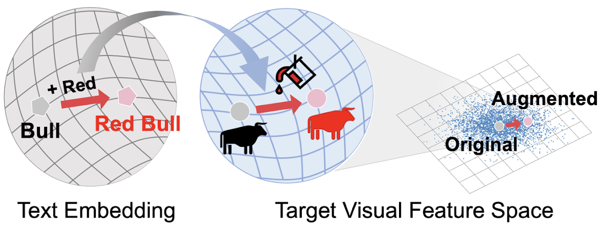

TextManiA: Enriching Visual Feature by Text-driven Manifold Augmentation
[PDF]
Moon Ye-Bin, Jisoo Kim, Hongyeob Kim, Kilho Son, Tae-Hyun Oh
- Propose a text-driven manifold augmentation method that semantically enriches visual feature spaces, regardless of data distribution
- Accepted to International Conference on Computer Vision (ICCV) 2023
[Project]
[arXiv]